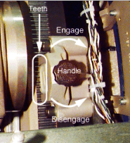
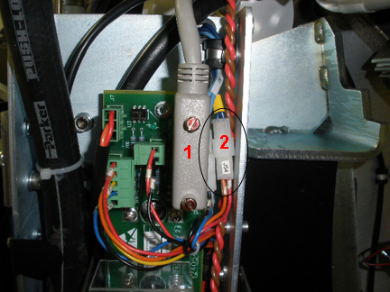
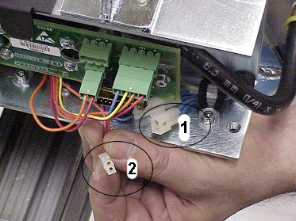

Operating Documentation
Direction 5193574-800, Rev# 22
LightSpeed 7.X Service Methods
Module Version 3.0, Version Date 2/27/12
Operating Documentation |
| NOTE: | This procedure is not required for the Discovery CT750 HD system. |
This procedure ensures that the thermistor, which controls the heat exchanger fan speed for the tube cooling regulation, is functioning properly. Improper functioning of the thermistor could lead to tube damage due to insufficient rate of airflow.
| ||||
| This evaluation should be done when the tube is cold. (Tube temperature equal to or below 200° C, or no scans have been done in the last two hours. The fans will be off.) | ||||
| ||||
| Shock Hazard | ||||
| Moving the gantry with power on can result in shock. | ||||
| Follow safety procedures when rotating the gantry with power on. |
Move the table to the lowest elevation.
Ensure that the Axial Rotation is disabled at the gantry service switch panel.
Rotate the gantry until the heat exchanger is within serviceable reach.
Turn off the gantry 120 V power at the gantry service switch panel.
Engage the rotational lock (see Illustration 1).
Illustration 1: Rotational Lock

Remove J2 (needed to reach J54; see Illustration 2).
Illustration 2: Thermistor Connections

| Item | Description |
| 1 | J2 Connector: Remove this connector to reach J54. |
| 2 | J54 Connector |
Disconnect the thermistor from the J54 on the heat exchanger (see Illustration 3).
Illustration 3: Thermistor Connection

| Item | Description |
| 1 | Thermistor connector to J54 |
| 2 | J54 connector |
Measure the resistance between the thermistor side pins of J54 (male pins).
It should measure 100 kOhms ± 20 kOhms at 25°C (144 k) on a tube that has not scanned within the last 2 hours.
Record the cold resistance reading on the PM Report Form.
If the resistance is open, the fans only run at low speed, which could result in damage to the tube. The heat exchanger must be replaced. (For replacement procedures, see Heat Exchanger Replacement.)
Reconnect J54.
Reconnect J2.
Disengage the rotational lock.
Power up the gantry and enable the Axial switch at the gantry service switch panel.
Confirm that the resistance decreases with increased temperature:
Run the standard Tube Warm-Up protocol (72-seconds) from the applications menu screen.
Wait for the rotor to brake completely.
Repeat steps 2 - 7.
Measure the resistance between the thermistor side pins of J54 again.
Record the hot resistance reading on the PM Report Form.
If the tube was cool to begin with, a drop in resistance of at least 50% ± 10 kOhms should be observed.
For example, if the initial resistance was measured at 100 kOhms, the resistance measured after the warm-up should be ≤ 60 kOhms. Taking an initial measurement with a tube that has recently scanned changes the amount the resistance decreases after a warm-up.
If the resistance did not change, replace the heat exchanger. (For replacement procedures, see Heat Exchanger Replacement.)
Reconnect J54.
Reconnect J2.
Disengage the rotational lock.
Power up the gantry at the gantry service switch panel.